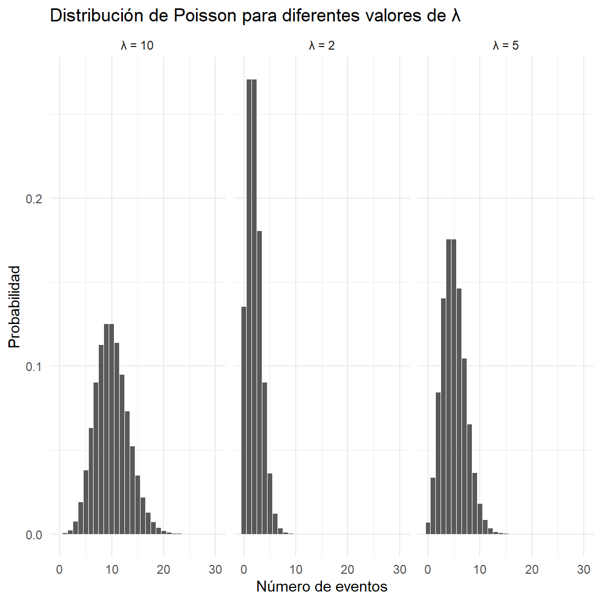

La distribución de Poisson es una distribución de probabilidad discreta utilizada para modelar el número de veces que ocurre un determinado evento durante un intervalo específico de tiempo, espacio, longitud, área o volumen.
Algunos ejemplos de situaciones que pueden modelarse mediante una distribución de Poisson son:
Número de ciudadanos que llegan a una oficina pública durante una hora.
Número de llamadas recibidas por una central telefónica.
Número de accidentes ocurridos en una carretera durante un día.
Número de solicitudes recibidas por una entidad pública.
Número de errores encontrados en una página.
Número de defectos encontrados en un producto.
Número de pacientes que llegan a un servicio de urgencias durante una hora.
La variable aleatoria se representa como:
X\sim Poisson(\lambda)
donde \lambda>0 representa el número promedio de ocurrencias del evento durante el intervalo considerado.
3 1. Características de la distribución de Poisson
Para utilizar la distribución de Poisson como modelo probabilístico, se consideran generalmente las siguientes condiciones.
3.1 1.1. Eventos independientes
La ocurrencia de un evento no debe afectar directamente la ocurrencia de otro.
Por ejemplo, la llegada de un ciudadano a una oficina pública no debería determinar que otro ciudadano llegue posteriormente.
3.2 1.2. Tasa promedio constante
La tasa promedio de ocurrencia debe mantenerse aproximadamente constante durante el intervalo estudiado.
Por ejemplo:
Una oficina pública recibe, en promedio, 6 solicitudes por hora.
En este caso:
\lambda=6
3.3 1.3. Eventos individuales
En intervalos suficientemente pequeños, la probabilidad de que ocurran dos o más eventos simultáneamente debe ser muy pequeña.
3.4 1.4. Variable discreta
La variable aleatoria solamente puede tomar valores enteros no negativos:
X=0,1,2,3,\ldots
4 2. Función de probabilidad
La función de probabilidad de una variable aleatoria Poisson está dada por:
\boxed{
P(X=x)=\frac{e^{-\lambda}\lambda^x}{x!}
}
para:
x=0,1,2,3,\ldots
donde:
Símbolo
Significado
X
Variable aleatoria
x
Número específico de eventos
\lambda
Número promedio de eventos
e
Número de Euler, aproximadamente 2.71828
x!
Factorial de x
5 3. El factorial
El factorial de un número entero positivo se define como:
x!=x(x-1)(x-2)\cdots 2(1)
Por ejemplo:
5!=5(4)(3)(2)(1)=120
También:
3!=6
2!=2
1!=1
Por definición:
0!=1
6 4. Interpretación del parámetro \lambda
El parámetro \lambda representa el número promedio de eventos que ocurren en el intervalo estudiado.
Por ejemplo, si una oficina recibe en promedio 8 ciudadanos por hora:
\lambda=8
Entonces:
X\sim Poisson(8)
Es importante tener presente que \lambda depende del intervalo.
Si se indica:
Llegan 12 ciudadanos por hora.
entonces:
\lambda=12
para un intervalo de una hora.
Pero para 30 minutos:
\lambda=12\left(\frac{30}{60}\right)=6
Por tanto:
X_{30}\sim Poisson(6)
7 5. Ejemplo 1: probabilidad de exactamente x eventos
Una oficina pública recibe en promedio 4 solicitudes por hora.
¿Cuál es la probabilidad de recibir exactamente 3 solicitudes durante una hora?
7.1 Paso 1. Identificar \lambda
Tenemos:
\lambda=4
y:
x=3
7.2 Paso 2. Aplicar la fórmula
P(X=3)=
\frac{e^{-4}4^3}{3!}
Como:
3!=6
entonces:
P(X=3)=
\frac{e^{-4}(64)}{6}
Por tanto:
P(X=3)\approx0.1954
En porcentaje:
\boxed{P(X=3)\approx19.54\%}
7.2.1 Interpretación
Existe aproximadamente un 19.54 % de probabilidad de que la oficina reciba exactamente 3 solicitudes durante una hora.
8 6. Probabilidad de cero eventos
Cuando se desea calcular la probabilidad de que no ocurra ningún evento:
P(X=0)
se utiliza:
P(X=0)=
\frac{e^{-\lambda}\lambda^0}{0!}
Como:
\lambda^0=1
y:
0!=1
obtenemos:
\boxed{
P(X=0)=e^{-\lambda}
}
8.1 Ejemplo 2
Una entidad recibe en promedio 5 solicitudes por hora.
¿Cuál es la probabilidad de no recibir ninguna solicitud durante una hora?
Tenemos:
\lambda=5
Entonces:
P(X=0)=e^{-5}
Por tanto:
P(X=0)\approx0.006738
En porcentaje:
\boxed{P(X=0)\approx0.674\%}
9 7. Probabilidad de al menos un evento
La expresión:
P(X\geq1)
significa que queremos calcular la probabilidad de que ocurra uno o más eventos.
Utilizamos el complemento:
P(X\geq1)=1-P(X=0)
Como:
P(X=0)=e^{-\lambda}
obtenemos:
\boxed{
P(X\geq1)=1-e^{-\lambda}
}
9.1 Ejemplo 3
Una oficina recibe en promedio 3 ciudadanos por hora.
¿Cuál es la probabilidad de recibir al menos un ciudadano durante una hora?
Tenemos:
\lambda=3
Entonces:
P(X\geq1)=1-e^{-3}
Por tanto:
P(X\geq1)\approx0.9502
Es decir:
\boxed{P(X\geq1)\approx95.02\%}
10 8. Probabilidad acumulada
Si queremos calcular la probabilidad de que ocurran como máximo k eventos:
29 27. Comparación de diferentes valores de \lambda
La forma de la distribución cambia cuando cambia \lambda.
Ver código
library(ggplot2)x <-0:30datos <-rbind(data.frame(x = x,probabilidad =dpois(x, 2),lambda ="λ = 2" ),data.frame(x = x,probabilidad =dpois(x, 5),lambda ="λ = 5" ),data.frame(x = x,probabilidad =dpois(x, 10),lambda ="λ = 10" ))ggplot( datos,aes(x = x,y = probabilidad )) +geom_col() +facet_wrap(~lambda) +labs(title ="Distribución de Poisson para diferentes valores de λ",x ="Número de eventos",y ="Probabilidad" ) +theme_minimal()

30 28. Interpretación estadística
La distribución de Poisson presenta una característica fundamental:
\boxed{
E(X)=Var(X)=\lambda
}
Por tanto, si:
\lambda=16
tenemos:
E(X)=16
Var(X)=16
y:
\sigma=\sqrt{16}=4
Esta propiedad permite realizar una primera evaluación de si los datos observados pueden ser compatibles con un modelo de Poisson.
31 29. Ejercicio propuesto 1
Una oficina de atención al ciudadano recibe en promedio 10 usuarios por hora.
Determine:
La probabilidad de recibir exactamente 7 usuarios.
La probabilidad de no recibir ningún usuario.
La probabilidad de recibir al menos un usuario.
La probabilidad de recibir como máximo 8 usuarios.
La probabilidad de recibir más de 12 usuarios.
La media.
La varianza.
La desviación estándar.
El coeficiente de variación.
La variable aleatoria es:
X\sim Poisson(10)
32 30. Ejercicio propuesto 2
Una central telefónica recibe en promedio 15 llamadas cada hora.
Determine:
La probabilidad de recibir exactamente 12 llamadas.
La probabilidad de recibir entre 10 y 18 llamadas.
La probabilidad de recibir más de 20 llamadas.
La probabilidad de recibir menos de 5 llamadas.
La media.
La varianza.
La desviación estándar.
33 31. Ejercicio propuesto 3: cambio de intervalo
Una entidad pública recibe en promedio 24 solicitudes durante 2 horas.
Determine:
El valor de \lambda para una hora.
El valor de \lambda para 30 minutos.
La probabilidad de recibir exactamente 5 solicitudes durante 30 minutos.
La probabilidad de recibir al menos una solicitud durante 30 minutos.
34 32. Conclusiones
La distribución de Poisson es un modelo fundamental para estudiar el número de ocurrencias de un evento durante un intervalo determinado.
Sus principales características son:
Es una distribución de probabilidad discreta.
Su único parámetro es \lambda.
\lambda representa el número promedio de eventos.
La media es:
E(X)=\lambda
La varianza es:
Var(X)=\lambda
La desviación estándar es:
\sigma=\sqrt{\lambda}
Es especialmente útil para modelar eventos que ocurren independientemente y a una tasa promedio aproximadamente constante.
Puede utilizarse como aproximación de la distribución binomial cuando n es grande y p es pequeño.
El parámetro \lambda debe ajustarse cuando cambia el intervalo de observación.
R facilita el cálculo de probabilidades mediante las funciones dpois(), ppois(), qpois() y rpois().
Idea fundamental: La distribución de Poisson responde principalmente a la pregunta: ¿cuál es la probabilidad de que ocurran exactamente, como máximo, al menos o más de cierto número de eventos durante un intervalo determinado, si conocemos su tasa promedio de ocurrencia?